突发变故~
OCR 识别提示（待核对）
- OCR 自动识别文字，尚未逐字校对；可能错字、漏字、漏行，数字、姓名、标点及断行也可能有误，请以截图为准。
- 这里只保留 PDF 已截到的正文、留言和作者回复；截图以外的留言不在此存档中。
- 未从截图推断留言总数或回复关系；手机界面文字也可能混入 OCR。
- 低置信标记仅为机器提示，并不表示未标记的文字已经准确。
识别工具：tesseract 5.5.0 · tesseract-ocr/tessdata_best chi_sim。识别器置信度仅用于提示核对，不是文字准确率。
第 1 页 · 原始截图
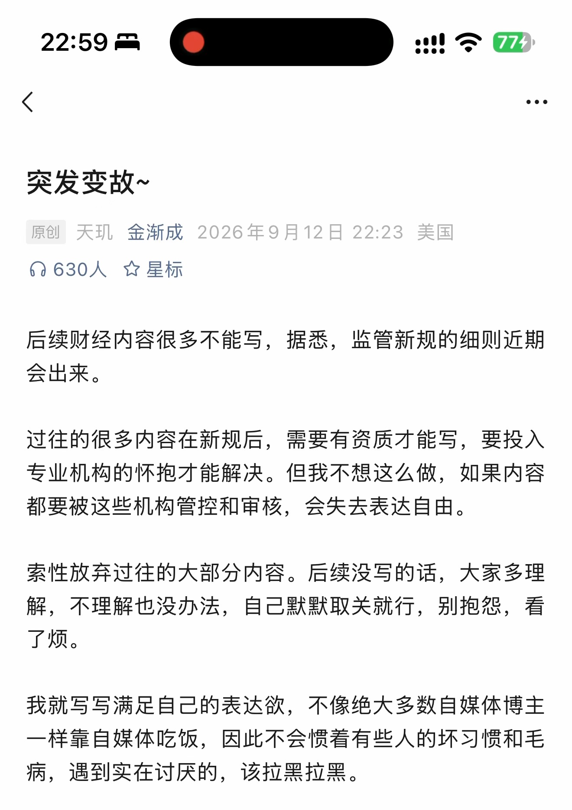
查看本页自动识别文字（OCR待核对） · 21 处低置信度提示
以下为未经逐字核对的自动识别结果，请以上方原图为准。
识别器标记 21 处低置信度，请对照截图核对
这些是识别器的风险提示，并不等于已确认的错误。
- > 人 := 一
- 突发变故 ~
- 原创天现金渐成 2026 年 9 月 12 日 22:23 美国
- 人 630 人人空星标
- 专业机构的怀抱才能解决。 但我不想这么做， 如果内容
- 都要被这些机构管控和审核， 会失去表达自由。
- 素性放弃过往的大部分内容。 后续没写的话， 大家多理
- 解， 不理解也没办法， 自己默默取关就行， 别抱忽， 看
- 了烦。
- 我就写写满足自己的表达欲， 不像绝大多数自媒体博主
- 一样靠自媒体吃饭， 因此不会惯着有些人的坏习惯和毛
第 2 页 · 原始截图
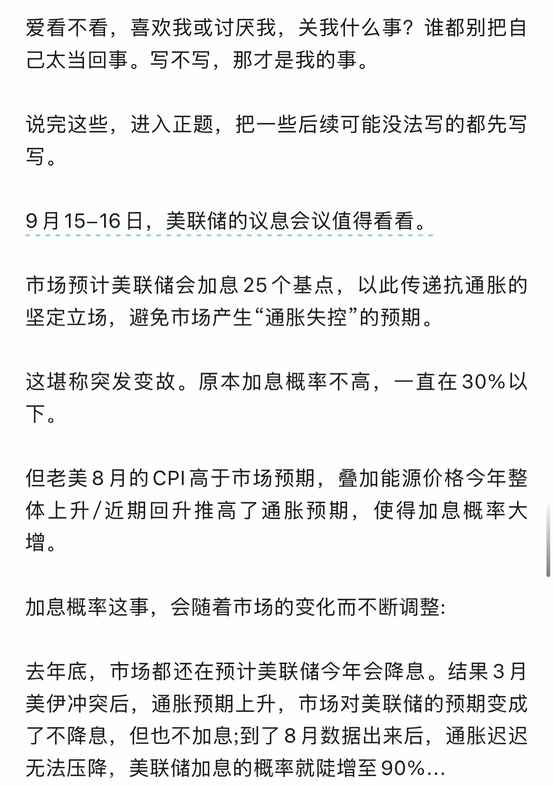
查看本页自动识别文字（OCR待核对） · 17 处低置信度提示
以下为未经逐字核对的自动识别结果，请以上方原图为准。
识别器标记 17 处低置信度，请对照截图核对
这些是识别器的风险提示，并不等于已确认的错误。
- 爱看不看， 喜欢我或讨厌我， 关我什么事 ? 谁都别把自
- 9 月 15-16 日， 美联储的议且会议值得看看。
- 坚定立场， 避免市场产生通胀失控 -的预期。
- 这堪称突发变故。 原本加息概率不高， 一直在 309% 以
- 但老美 8 月的 CPI 高于市场预期， 亚加能源价格今年整
- 加息概率这事， 会随着市场的变化而不断调整 :
- 去年底， 市场都还在预计美联储今年会降息。 结果 3 上月
- 了不降息， 但也不加息 ;到了 8 月数据出来后， 通胀迟迟
- 无法压降， 美联储加息的概率就陡增至 90%.…
第 3 页 · 原始截图
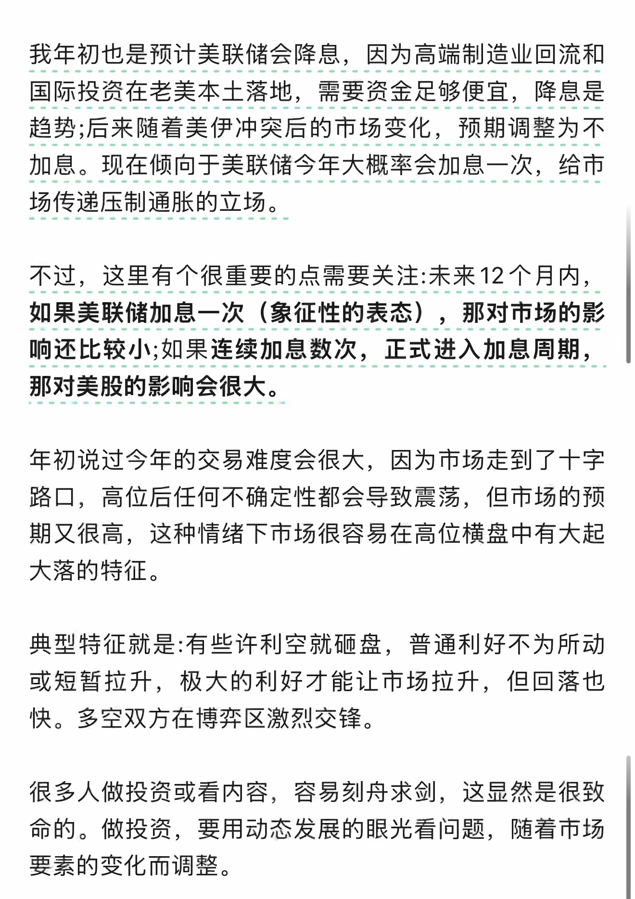
查看本页自动识别文字（OCR待核对） · 23 处低置信度提示
以下为未经逐字核对的自动识别结果，请以上方原图为准。
识别器标记 23 处低置信度，请对照截图核对
这些是识别器的风险提示，并不等于已确认的错误。
- 压条二各生生二在二全， 因思融请制造回流和
- 路口， 高位后任何不确定性都会导致震荡， 但市场的预
- 大落的特征。
- 典型特征就是 :有些许利空就磺盘， 普通利好不为所动
- 快。 多空双方在博弈区激烈交锋。
- 很多人做投资或看内容， 容易刻舟求剑， 这显然是很致
- 命的。 做投资， 要用动态发展的眼光看问题， 随着市场
第 4 页 · 原始截图
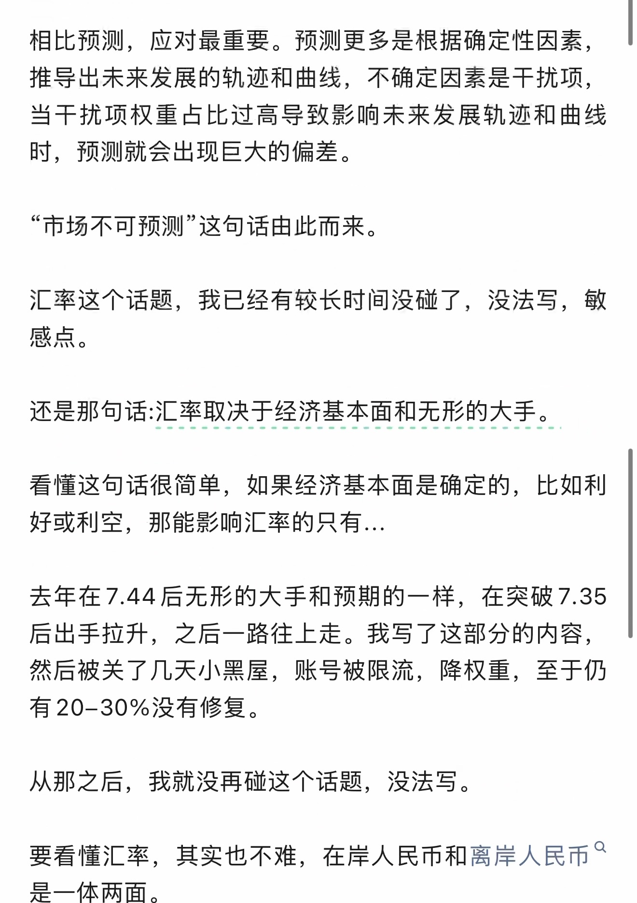
查看本页自动识别文字（OCR待核对） · 16 处低置信度提示
以下为未经逐字核对的自动识别结果，请以上方原图为准。
识别器标记 16 处低置信度，请对照截图核对
这些是识别器的风险提示，并不等于已确认的错误。
- 当王扰项权重占比过高导致影响未来发展轨迹和曲线
- 时， 预测就会出现巨大的偏差。
- “市场不可预测 “这句话由此而来。
- 汇率这个话题， 我已经有较长时间没碰了， 没法写， 敏
- 还是那句话 :汇率取决于经济基本面和无形的大手。
- 好或利空， 那能影响汇率的只有 .….
- 去年在 7.44 后无形的大手和预期的一样， 在突破 7.35
- 然后被关了几天小黑屋， 账号被限流， 降权重， 至于仍
- 从那之后， 我就没再碰这个话题， 没法写。
- 要看懂汇率， 其实也不难， 在岸人民币和离岸人民币 ”
第 5 页 · 原始截图
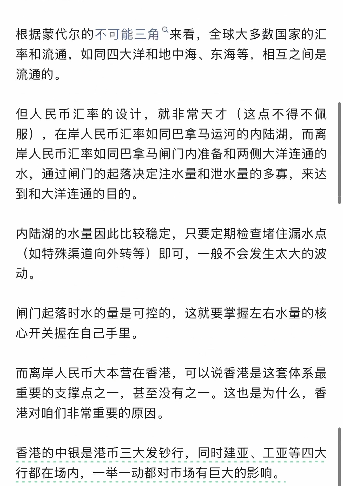
查看本页自动识别文字（OCR待核对） · 16 处低置信度提示
以下为未经逐字核对的自动识别结果，请以上方原图为准。
识别器标记 16 处低置信度，请对照截图核对
这些是识别器的风险提示，并不等于已确认的错误。
- 根据蒙代尔的不可能三角 “ 来看， 全球大多数国家的汇
- 率和流通， 如同四大洋和和地中海、 东海等， 相互之间是
- 但人民币汇率的设计， 就非常天才 (这点不得不佩
- 岸人民币汇率如同巴拿马阐门内准备和两侧大洋连通的
- 水， 通过闸门的起落决定注水量和泄水量的多专， 来达
- 动 0
- 益门起落时水的量是可控的， 这就要掌握左右水量的核
- 而离岸人民币大本营在香港， 可以说香港是这套体系最
- 重要的支撑点之一， 甚至没有之一。 这也是为什么， 香
第 6 页 · 原始截图
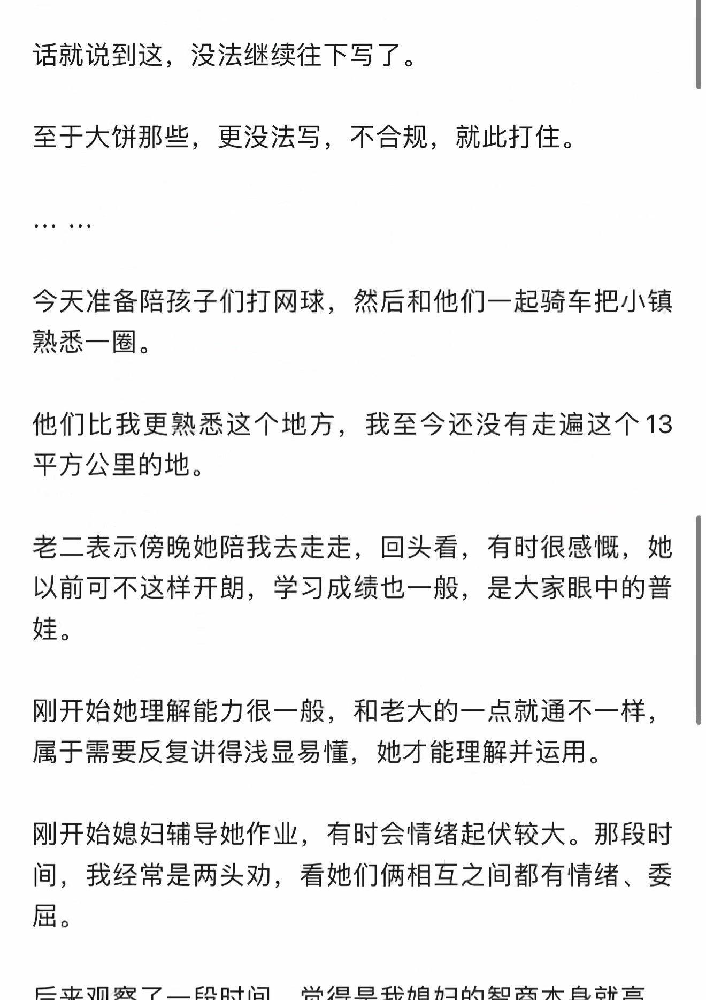
查看本页自动识别文字（OCR待核对） · 10 处低置信度提示
以下为未经逐字核对的自动识别结果，请以上方原图为准。
识别器标记 10 处低置信度，请对照截图核对
这些是识别器的风险提示，并不等于已确认的错误。
- 今天准备陪孩子们打网球， 然后和他们一起骑车把小镇
- 熟悉一圈。
- 他们比我更熟悉这个地方， 我至今还没有走遍这个 13
- 老二表示傍晚她陪我去走走， 回头看， 有时很感慨， 她
- 以前可不这样开朗， 学习成绩也一般， 是大家眼中的普
- 属于需要反复讲得浅显易懂， 她才能理解并运用。
- 刚开始媳妇辅导她作业， 有时会情绪起伏较大。 那段时
- 屈
第 7 页 · 原始截图
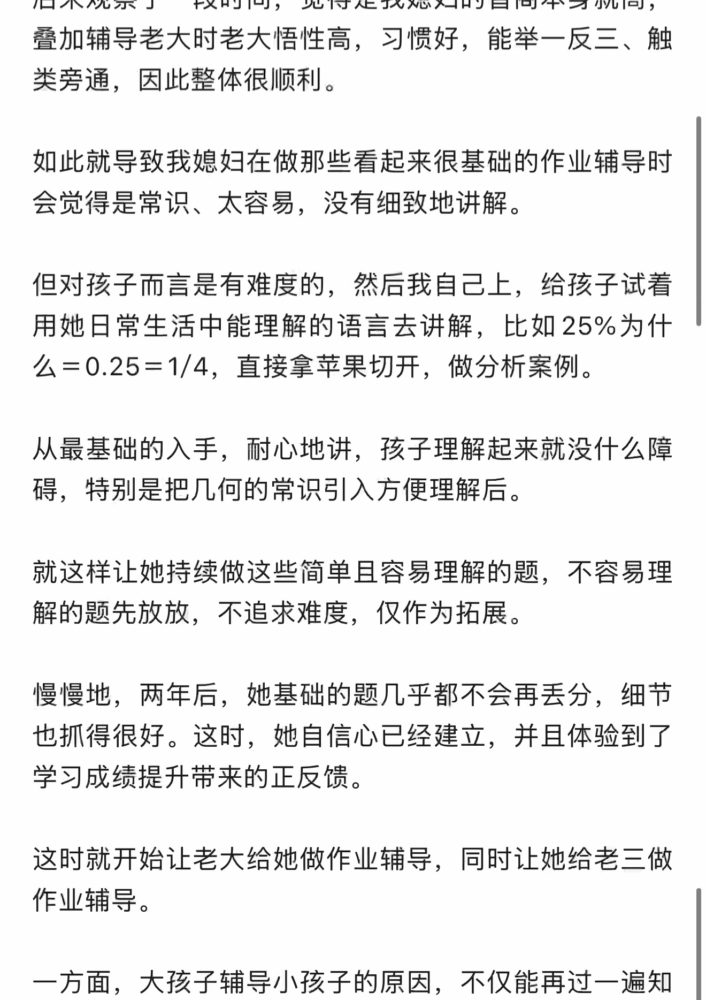
查看本页自动识别文字（OCR待核对） · 13 处低置信度提示
以下为未经逐字核对的自动识别结果，请以上方原图为准。
识别器标记 13 处低置信度，请对照截图核对
这些是识别器的风险提示，并不等于已确认的错误。
- 后来观察了一段时间， 觉得是我媳妇的智商本身就高，
- 到加辅导老大时老大悟性高， 习惯好， 能举一反三、 触
- 如此就导致我媳妇在做那些看起来很基础的作业辅导时
- 用她日常生活中能理解的语言去讲解， 比如 25% 为什
- 么 =0.25=1/4， 直接拿苹果切开， 做分析案例。
- 从最基础的入手， 耐心地讲， 孩子理解起来就没什么障
- 解的题先放放， 不追求难度， 仅作为拓展。
- 慢慢地， 两年后， 她基础的题几乎都不会再丢分， 细节
- 一方面， 大孩子辅导小孩子的原因， 不仅能再过一遍知
第 8 页 · 原始截图
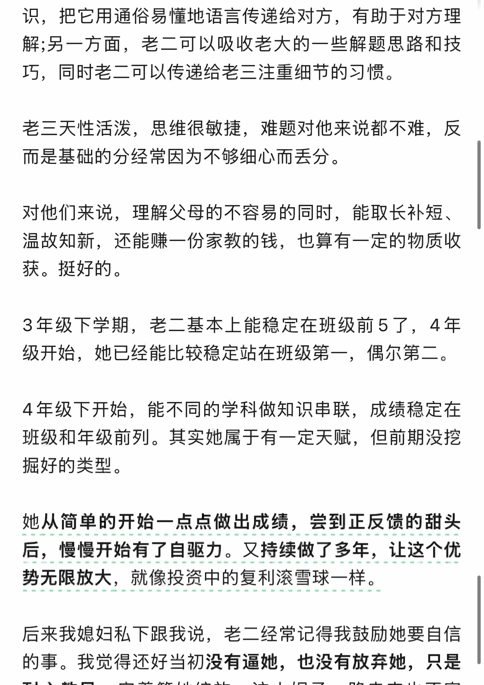
查看本页自动识别文字（OCR待核对） · 17 处低置信度提示
以下为未经逐字核对的自动识别结果，请以上方原图为准。
识别器标记 17 处低置信度，请对照截图核对
这些是识别器的风险提示，并不等于已确认的错误。
- 老三天性活泼， 思维很敏捷， 难题对他来说都不难， 反
- 而是基础的分经常因为不够细心而丢分。
- 对他们来说， 理解父母的不容易的同时， 能取长补短、
- 3 年级下学期， 老二基本上能稳定在班级前 5 了，4 年
- 级开始， 她已经能比较稳定站在班级第一， 偶尔第二。
- 班级和年级前列。 其实她属于有一定天赋， 但前期没控
- 后， 慢慢开始有了自驱力。 又持续做了多年， 让这个优
- 后来我媳妇私下跟我说， 老二经常记得我鼓励她要自信
- 的事。 我觉得还好当初没有逼她， 也没有放弃她， 只是
第 9 页 · 原始截图
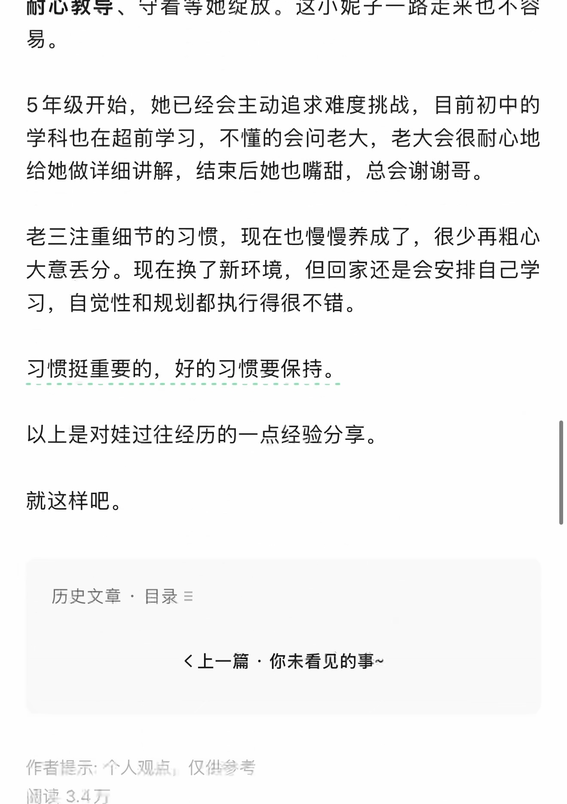
查看本页自动识别文字（OCR待核对） · 21 处低置信度提示
以下为未经逐字核对的自动识别结果，请以上方原图为准。
识别器标记 21 处低置信度，请对照截图核对
这些是识别器的风险提示，并不等于已确认的错误。
- 易 0
- 学科也在超前学习， 不懂的会问老大， 老大会很耐心地
- 给她做详细讲解， 结束后她也嘴甜， 总会谢谢哥。
- 习惯所重要的， 好的习惯要保持。
- 历史文章， 目录 =
- 《上一篇你未看见的事 ~
- 作者提示个人观训 ” 仅合移考
- 闹读 3.4 广
第 10 页 · 原始截图
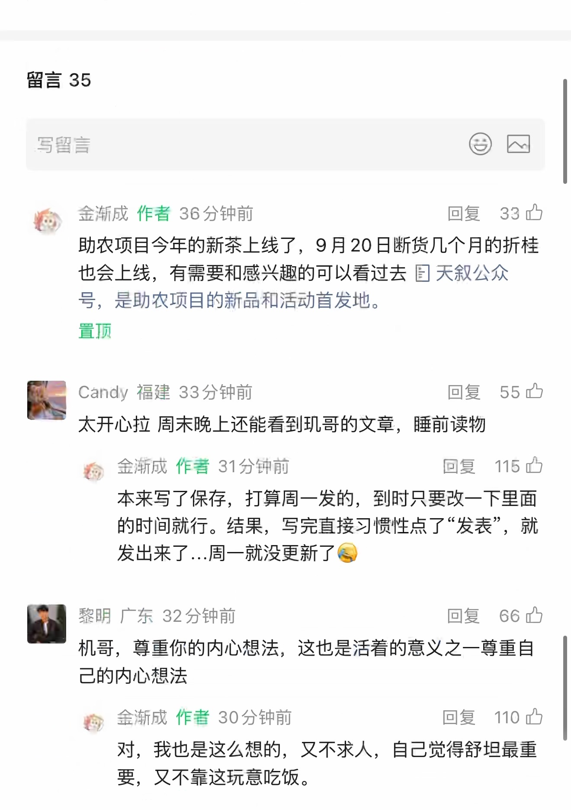
查看本页自动识别文字（OCR待核对） · 42 处低置信度提示
以下为未经逐字核对的自动识别结果，请以上方原图为准。
识别器标记 42 处低置信度，请对照截图核对
这些是识别器的风险提示，并不等于已确认的错误。
- 写留言 CRa
- 每金渐成作者 36 分钟前回复 ”33 目
- 助农项目今年的新茶上线了，9 月 20 日断货几个月的折桂
- 也会上线， 有需要和感兴趣的可以看过去图天叙公众
- 号， 是助农项目的新品和活动首发地。
- 国 :ro 三 2 回复 55 上
- 太开心拉周末晚上还能看到现哥的文章， 睡前读物
- 和合全渐成作者 31 分钟前回复 115 四
- 的时间就行。 结果， 写完直接习惯性点了发表"， 就
- 发出来了 .… 周一就没更新了独
- 国锤 :2 回复 ”66 办
- 机哥， 音重你的内心想法， 这也是活着的意义之一尊重自
- 稚， 金浙成作者 30 分钟前回复全
- 对， 我也是这么想的， 又不求人， 自己觉得舒坦最重
第 11 页 · 原始截图
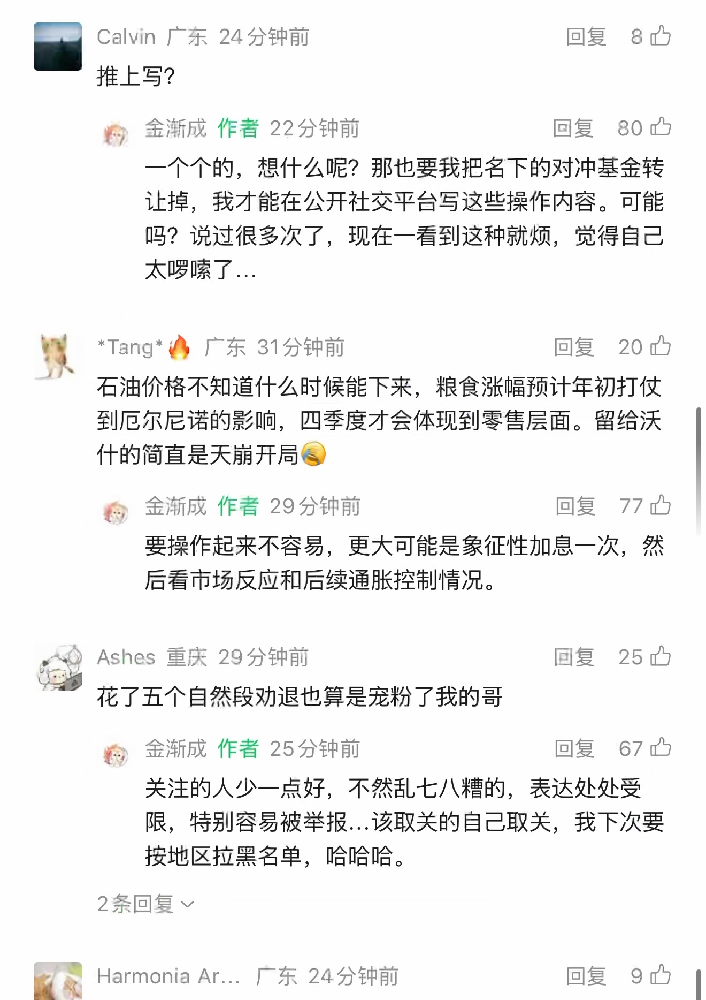
查看本页自动识别文字（OCR待核对） · 54 处低置信度提示
以下为未经逐字核对的自动识别结果，请以上方原图为准。
识别器标记 54 处低置信度，请对照截图核对
这些是识别器的风险提示，并不等于已确认的错误。
- 村 Calvin 广东 24 分钟前回复 8 四
- 叭人金渐成作者 22 分钟前回复 ”80 轿
- 吗 ? 说过很多次了， 现在一看到这种就烦， 觉得自己
- 分本村 >…
- *Teng* 移广东 31 分钟前回复 ”20 办
- 石油价格不知道什么时候能下来， 粮食涨幅预计年初打仗
- 到厄尔尼诺的影响， 四季度才会体现到零售层面。 留给沃
- 人
- EC
- 多金渐成作者 29 分钟前回复 NB
- 要操作起来不容易， 更大可能是象征性加息一次， 然
- 5 洽 Ashes 本陈 29 分名回复 ”25 内
- | 花了五个自然段劝退也算是宠粉了我的哥
- 烙， 金渐成作者 25 分钟前回复 ”67 只
- 按地区拉黑名单， 哈哈哈。
- 区 Harmonia Ar... > 并 24 分钟前回复 9 四
第 12 页 · 原始截图
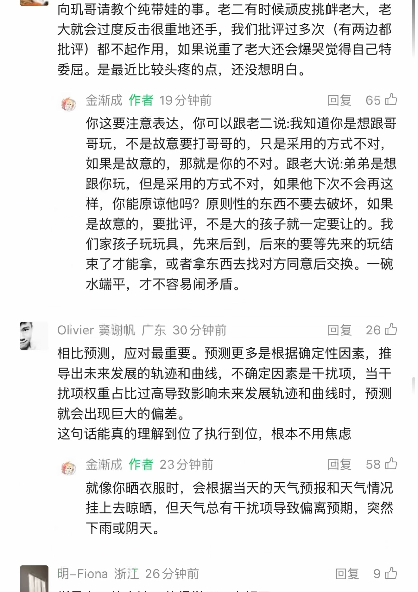
查看本页自动识别文字（OCR待核对） · 48 处低置信度提示
以下为未经逐字核对的自动识别结果，请以上方原图为准。
识别器标记 48 处低置信度，请对照截图核对
这些是识别器的风险提示，并不等于已确认的错误。
- |
- 向现哥请教个纯带娃的事。 老二有时候顽皮挑峡老大， 老
- 批评 ) 都不起作用， 如果说重了老大还会爆哭觉得自己特
- 委屈。 是最近比较头疼的点， 还没想明白。
- 烙， 金渐成作者 19 分钟前回复 ”65 中
- 你这要注意表达， 你可以跟老二说 :我知道你是想跟哥
- 哥玩， 不是故意要打哥哥的， 只是采用的方式不对，
- 样， 你能原谅他蚂 ? 原则性的东西不要去破坏， 如果
- 束了才能拿， 或者拿东西去找对方同意后交换。 一砚
- 水端平， 才不容易闪矛盾。
- Olivier 村诈帆三东 30 分钟前回复 ”26 四
- 相比预测， 应对最重要。 预测更多是根据确定性因素， 推
- 导出未来发展的轨迹和曲线， 不确定因素是干扰项， 当干
- 扰项权重占比过高导致影响未来发展轨迹和曲线时， 预测
- 这句话能真的理解到位了执行到位， 根本不用焦虑
- 长， 金斯成作者 23 分钟前回复 ”58 办
- 就像你晒衣服时， 会根据当天的天气预报和天和气情况
- 挂上去晾晒， 但天气总有干扰项导致偏离预期， 突然
- 下十或阴天。
- 明 -Fiona 浙江 26 分钟前回复 9 办
第 13 页 · 原始截图
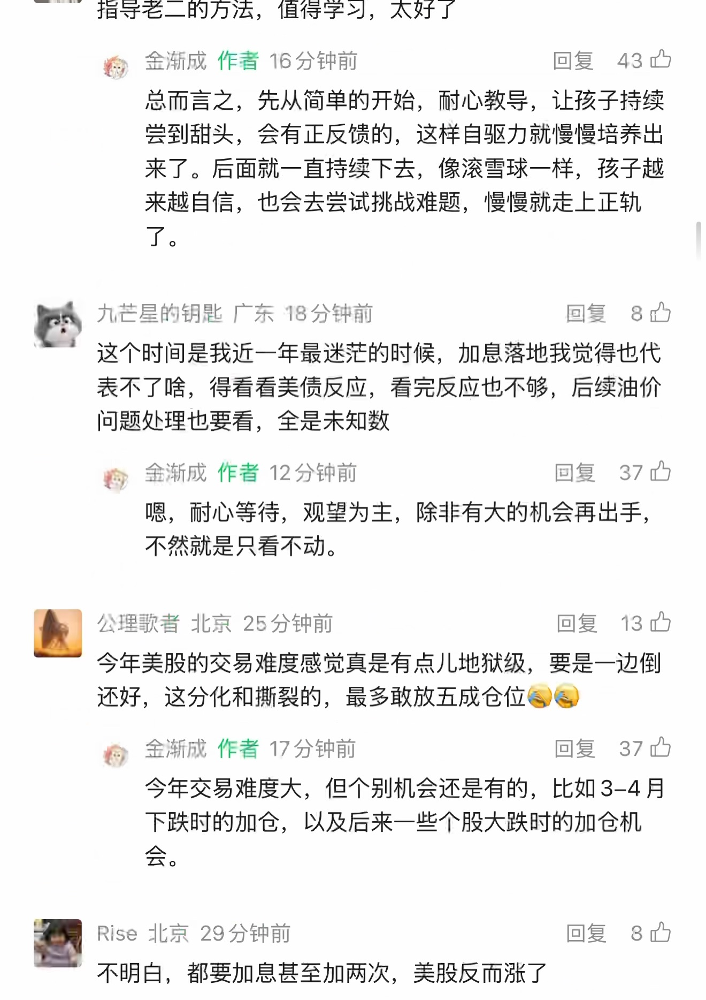
查看本页自动识别文字（OCR待核对） · 56 处低置信度提示
以下为未经逐字核对的自动识别结果，请以上方原图为准。
识别器标记 56 处低置信度，请对照截图核对
这些是识别器的风险提示，并不等于已确认的错误。
- ”指导老二的方法， 值得学习， 太好了
- 稚， 人金渐成作者 16 分钟前回复 43 四
- 来了。 后面就一直持续下去， 像滚雪球一样， 孩子越
- 来越自信， 也会去尝试挑战难题， 慢慢就走上正轨
- 你九芒星的钥匙广东 18 分钟前回复 ”8 号
- 这个时间是我近一年最迷茫的时候， 加息落地我觉得也代
- 表不了啥， 得看看美债反应， 看完反应也不够， 后续油价
- 符， 金渐成作者 12 分钟前回复 ”37 办
- 嗯， 耐心等待， 观望为主， 除非有大的机会再出手，
- 因公理歌者北京 25 分钟前回复 13 办
- 今年美股的交易难度感觉真是有点儿地狱级， 要是一边倒
- 还好， 这分化和撕裂的， 最多敢放五成仓位合生
- 从爹渐成作者 17 分钟前回复 37 办
- 今年交易难度大， 但个别机会还是有的， 比如 3-4 月
- 下跌时的加仓， 以及后来一些个股大跌时的加仓机
- 古 !s 回复 8
- 不明白， 都要加息甚至加两次， 美股反而涨了
第 14 页 · 原始截图
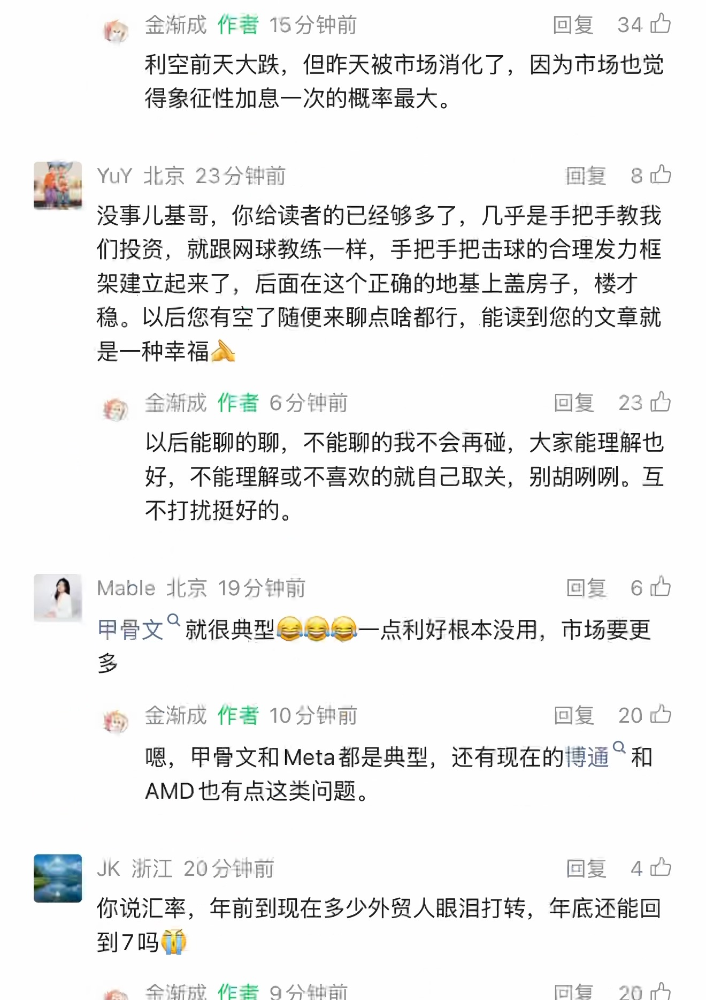
查看本页自动识别文字（OCR待核对） · 61 处低置信度提示
以下为未经逐字核对的自动识别结果，请以上方原图为准。
识别器标记 61 处低置信度，请对照截图核对
这些是识别器的风险提示，并不等于已确认的错误。
- 他 ”人金渐成作者 15 分钟前回复 34 办
- 的 YuY 北京 23 分钟前回复 8 让
- 没事儿基哥， 你给读者的已经够多了， 几乎是手把手教我
- 们投资， 就跟网球教练一样， 手把手把击球的合理发力杠
- 架建立起来了， 后面在这个正确的地基上盖房子， 楼才
- 稳。 以后您有空了随便来聊点啥都行， 能读到您的文章就
- 是一种幸福食
- 符 ” 爹渐成作者 6 分钟前回复 ”23 号
- 以后能聊的聊， 不能聊的我不会再碰， 大家能理解也
- 好， 不能理解或不喜欢的就自己取关， 别胡吓啊。 互
- 不打护挺好的。
- 久，Mable 北京 19 分钟前回复 ”6 四
- 甲骨文 ” 就很典型怠怠名一点利好根本没用， 市场要更
- 稚， 金渐成作者 10 分钟丽回复 “20 只
- 咽， 甲骨文和 Meta 都是典型， 还有现在的博通 ”和
- 图 JK 浙江 20 分钟前回复 4 四
- 到 7 吗二
- 本， 人金渐成作者 9 分钟前回复 ”20 办
第 15 页 · 原始截图
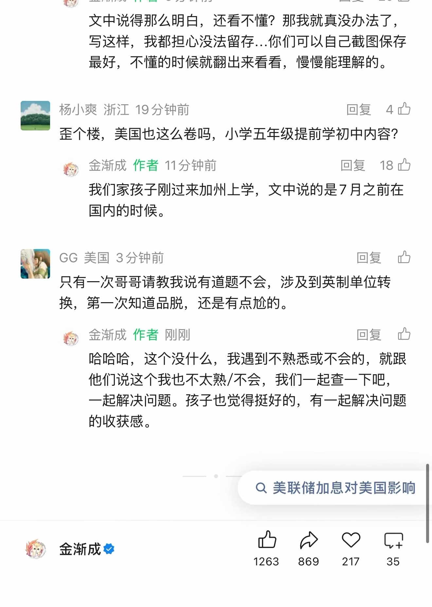
查看本页自动识别文字（OCR待核对） · 39 处低置信度提示
以下为未经逐字核对的自动识别结果，请以上方原图为准。
识别器标记 39 处低置信度，请对照截图核对
这些是识别器的风险提示，并不等于已确认的错误。
- 文中说得那么明白， 还看不懂 ? 那我就真没办法了，
- 写这样， 我都担心没法留存 .… 你们可以自己截图保存
- 天变革和全回复 4 四
- 牌个楼， 美国也这么卷吗， 小学五年级提前学初中内容 ?
- 稚， 金渐成作者 ?1 分钟前回复 18 办
- kse 站 39 回复 ”四
- 。 只有一次哥哥请教我涪有道题不会， 涉及到英制单位转
- 换， 第一次知道品脱， 还是有点座的。
- 芍金渐成作者刚刚回复 ”内
- 他们说这个我也不太熟 /不会， 我们一起查一下吧，
- 一起解决问题。 孩子也觉得插好的， 有一起解决问题
- 每小站站四 3 G 2
- 1263 OO 217 35
按日期浏览全部来源（同日按条目标识排序）
回到页首 ↑